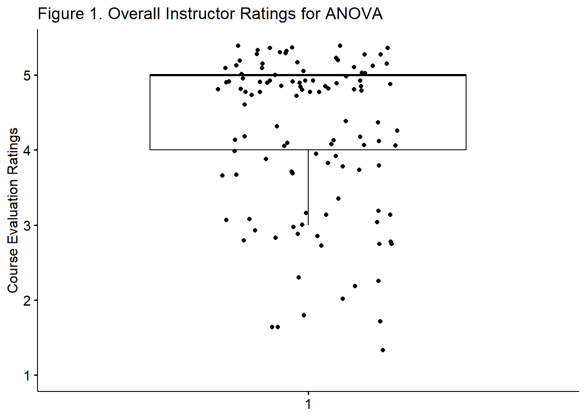

Chapter 4 One Sample t-tests
Researchers and program evaluators, may wish to know if their data differs from an external standard. In today’s research vignette, we will ask if the time physicians spent with their patients differed from an external benchmark. The one sample t-test is an appropriate tool for this type of analysis. As we work toward the one sample t-test we take some time to explore the standard normal curve and z-scores, particularly as they related to probability.
4.2 z before t
Probability density functions are mathematical formula that specifies idealized versions of known distributions. The equations that define these distributions allow us to calculate the probability of obtaining a given score. This is a powerful tool.
As students progress through statistics, they become familiar with a variety of these distributions including the t-distribution (commonly used in t-tests), F-distribution (commonly used in analysis of variance [ANOVA]), and Chi-square (\(X^2\)) distributions (used in a variety of statistics, including structural equation modeling). The z distribution is the most well-known of these distributions.
The z distribution is also known as the normal distribution, the bell curve, or the standard normal curve. Its mean is always 0.00 and its standard deviation is always 1.00. Regardless of the actual mean and standard deviation:
- 68.3% of the area falls within 1 standard deviation of the mean
- 95.4% of the distribution falls within 2 standard deviations of the mean
- 99.7% of the distribution falls within 3 standard deviations of the mean
 z-scores are transformations of raw scores, in standard deviation units. Using the following formula, so long as the mean and standard deviation are known, any set of continuously scaled scores can be transformed to a z-scores equivalent:
z-scores are transformations of raw scores, in standard deviation units. Using the following formula, so long as the mean and standard deviation are known, any set of continuously scaled scores can be transformed to a z-scores equivalent:
\[z=\frac{X-\bar{X}}{s}\] We can rearrange the formula to find what raw score corresponds with the z-score.
\[X = \bar{X} + z(s)\]
The properties of the z-score and the standard normal curve allow us to make inferences about the data.
4.2.1 Simulating a Mini Research Vignette
Later in this larger section on t-tests we introduce a research vignette that focuses on time physicians spend with patients. Because working with the z-test requires a minimum sample size of 120 (and the research vignette has a sample size of 33), I will quickly create normally distributed sample of 200 with a mean of 10 minutes and a standard deviation of 2 minutes per patient. This will allow us to ask some important questions of the data.
# https://r-charts.com/distribution/histogram-curves/
set.seed(220821)
PhysTime <- data.frame(minutes = rnorm(200, mean = 10, sd = 2))Using the describe() function from the psych package, we can see the resulting descriptive statistics.
vars n mean sd median trimmed mad min max range skew kurtosis se
X1 1 200 9.9 2 9.98 9.93 2 3.68 15.15 11.47 -0.2 0.03 0.14Specifically, in this sample size of 200, our mean is 9.9 with a standard deviation of 2.0.
4.2.2 Raw Scores, z-scores, and Proportions
With data in hand, let’s ask, “What is the range of time that physicians spend with patients that fall within 1 standard deviation of the mean?” We would answer this question by applying the raw score formula (\(X = \bar{X} + z(s)\)) to +1 and -1 standard deviation.
[1] 7.9[1] 11.9Because \(\pm 1SD\) covers 68% of the distribution, we now know that 68% of patients have physician visits that are between 7.9 and 11.9 minutes long.
What about \(\pm 2SDs\)? Similarly, we would apply the raw score formula, using 2 for the standard deviation.
[1] 5.9[1] 13.9Two standard deviations around the mean captures 94.5% of patients; patients in this range receive between visits that range between 5.9 and 13.9 minutes.
And what about \(\pm 3SDs\)? This time we use 3 to represent the standard deviation.
[1] 3.9[1] 15.9Three standard deviations around the mean captures 99.7% of patients; patients in this range receive between visits that range between 3.9 and 15.9 minutes.
4.2.3 Determining Probabilities
We can also ask questions of probability. For example, what is the probability that a physician spends at least 9.9 minutes with a patient? To answer this question we first calculate the z-score associated with 9.9 minutes.
\[z=\frac{X-\bar{X}}{s}\]
[1] 0We learn that 9.9 minutes (the mean of the distribution of raw scores) corresponds with 0 (the mean of the distribution of z-scores).
Next, we examine a table of critical z values where we see that a score of 0.0 corresponds to an area (probability) of .50. The directionality of our table is such that fewer minutes spent with patients are represented on the left (the shaded portion) and more minutes spent with patients are represented on the right (the unshaded portion). Our question asks, what is the probability that a physician spends at least 9.9 minutes with a patient (i.e., 9.9 or more minutes) means that we should use the area on the right. Thus, the probability that a physician spends at least 9.9 minutes with a patient is 50%. In this case it is also true that the probability that a physician spends 9.9 minutes or less is also 50%. This 50/50 result helps make the point that the area under the curve is equal to 1.0.
 We can also obtain the probability value with the pnorm() function. We enter the score, the mean, and the standard deviation. As shown below, we can enter them in z score formula or from the raw scores.
We can also obtain the probability value with the pnorm() function. We enter the score, the mean, and the standard deviation. As shown below, we can enter them in z score formula or from the raw scores.
[1] 0.5[1] 0.5Next, let’s ask a question that requires careful inspection of the asymmetry of the curve. What is the probability that a physician spends less than 5 minutes with a patient? First, we calculate the corresponding z-score:
[1] -2.45Second we locate the corresponding area under the normal curve. Examining the table of critical z-values we see that a z-score of -2.45 corresponds with an area of 0.0071. We can check this with the pnorm() function:
[1] 0.007142811[1] 0.007142811 There is a .7% (that is less than 1%) probability that physicians spend less than 5 minutes with a patient. The inverse (1 - .7) indicates that we can be 99% confident that patients receive 5 or more minutes with the ICU physician.
There is a .7% (that is less than 1%) probability that physicians spend less than 5 minutes with a patient. The inverse (1 - .7) indicates that we can be 99% confident that patients receive 5 or more minutes with the ICU physician.
What about operations at the other end of the curve? What is the probability that a patient receives less than 12 minutes with a physician? Again, we start with the calculation of the z-score.
[1] 1.05The 12 minute mark is 1.05 SD above the mean. Checking the z table lets us know that an area of 0.8531 corresponds with a z-score of 1.05.
[1] 0.1469 The probability of a physician spending 12 minutes or less with a patient is 85%; the probability of a physician spending 12 minutes or more with a patient is 15%.
The probability of a physician spending 12 minutes or less with a patient is 85%; the probability of a physician spending 12 minutes or more with a patient is 15%.
4.2.4 Percentiles
The same values that we just collected are often interpreted as percentiles. Our prior calculations taught us that a physician/patient visit that lasted 9.9 minutes (z = 0), is ranked at the 50th percentile. That is, a 9.9 minute visit is longer than 50% of patient/physician visits.
A visit lasting 5 minutes (z = -2.45) is ranked at the .07th percentile. That is fewer than 1% of patient/physician visits are shorter than 5 minutes.
Finally, a visit lasting 12 minutes (z = 1.05) is ranked at the 85th percentile. That is, it is longer than 85% of patient visits.
While this seems redundant, this something of a prelude to the importance of z scores and the standard normal curve in assessment, evaluation, and psychometrics.
4.2.5 Transforming Variables to Standard Scores
At this point, we have hand-calculated each score. It is easy to transform a set of scores into a column of z-scores:
PhysTime$zMinutes <- (PhysTime$minutes - mean(PhysTime$minutes))/sd(PhysTime$minutes)
head(PhysTime) minutes zMinutes
1 10.300602 0.20226980
2 10.143081 0.12370440
3 9.785452 -0.05466684
4 13.162710 1.62977447
5 6.120944 -1.88237678
6 11.793346 0.94679063The transformation of scores is considered to be linear. That is, this 1:1 relationship would result in a correlation of 1.00. Further, the z-version of the variable could be used in analyses, just as the original raw score. Choices to do this are made carefully and usually done to optimize interpretation. I will demonstrate this with set of descriptive statistics produced by the apa.cor.table() function from the apaTables package.
Means, standard deviations, and correlations with confidence intervals
Variable M SD 1
1. minutes 9.90 2.00
2. zMinutes 0.00 1.00 1.00**
[1.00, 1.00]
Note. M and SD are used to represent mean and standard deviation, respectively.
Values in square brackets indicate the 95% confidence interval.
The confidence interval is a plausible range of population correlations
that could have caused the sample correlation (Cumming, 2014).
* indicates p < .05. ** indicates p < .01.
4.2.6 The One-Sample z test
The one-sample z test is a common entry point to hypothesis testing. Let’s imagine that we have reason to believe that an optimal physician/patient interaction in the ICU is 10.5 minutes. We want to use this value as a contrast to our own data and ask if the physician/patient interactions in our ICU are statistically significantly different. To test this hypothesis, we first set up null (\(H_0\)) and alternative (\(H_A\)) hypotheses. Our null hypothesis states that the population mean for physician/patient visits is equal to 10.5; the alternative hypothesis states that it is unequal to 10.5.
As written, this question is two-tailed. That is, the external mean could be larger or smaller, we are just curious to see if it is different.
\[ \begin{array}{ll} H_0: & \mu = 10.5 \\ H_A: & \mu \neq 10.5 \end{array} \] Alternatively, we could ask a one-sided question. That is, we might hypothesize that our sample mean is smaller than the external mean.
\[ \begin{array}{ll} H_0: & \mu = 10.5 \\ H_A: & \mu < 10.5 \end{array} \] Whether the test is one- or two- sided makes a difference in the strictness with which we interpret the results and can impact whether or not the result is statistically significant. We will reject the \(H_0\) in favor of the alternative (\(H_A\)) if the resulting test statistic (a z score) falls into the region of rejection (but that region shifts, depending on whether our test is one- or two- tailed).
Statistician, Sir Ronald Fisher, popularized 5% as the region of rejection. Specifically, if a probability value associated with a z-score (or similar) falls into the tails of a distribution that represent 5%, then the \(H_0\) is rejected, in favor of the \(H_A\).
Stated another way
- p is the probability that the \(H_0\) is true
- p > 0.05 suggests that there is a 95% chance or greater that the \(H_0\) is true
- 1 minus the p value is the probability that the alternative hypothesis is true.
- A statistically significant test result (p < 0.05) means that the test hypothesis is false or should be rejected.
- A p value greater than 0.05 means that no effect was observed.
If our hypothesis is two-sided, then we can spread the 5% across both tails of the test. Inspecting a table of z values shows that \(\pm 1.96\) would be the region of rejection of \(H_0\). In contrast, if the hypothesis is directionless (two-tailed), \(1.64\) would serve as the boundary for the region of rejection and the corresponding z-test would require the same sign (+ or -) as the hypothesized tail of the distribution. So long as the hypothesis is consistent with the data, a one-sided test can be more powerful, that is, there is greater probability (defined as area under the curve) for rejecting the \(H_0\), if it is should be rejected.

The formula for a one-sample z-test is as follows:
\[ z_{\bar{X}} = \frac{\bar{X} - \mu_0}{\sigma / \sqrt{N}} \] We have already calculated these values. But let’s calculate some of them again as a reminder:
vars n mean sd median trimmed mad min max range skew kurtosis se
X1 1 200 9.9 2 9.98 9.93 2 3.68 15.15 11.47 -0.2 0.03 0.14- Sample mean is 9.9
- Population mean (the one we’re comparing to) is 10.5
- Standard deviation is 2
- N is 200
[1] -4.242641The resulting value, \(z = -4.242\) is our test value. Because this far exceeds \(\pm 1.96\) we know (from memory) that there is a statistically significant effect. Just to be certain, let’s use the pnorm() function to obtain the p value.
[1] 0.0000000000007746685Simply with these hand-calculations, we can claim that there was a statistically significant difference between the physician/patient visit times in our simulated sample data and external benchmark criteria: \(z(200) = -4.24, p < .001\).
The one sample z-test is rarely sighted in the published literature. However, a close inspection of a table of critical t-values, reveals that the very bottom row (i.e., when sample sizes are 120 or greater) is, in fact, the z criteria. Thus, it is time to learn about the one sample t-test.
4.3 Introducing the One-Sample t-test
The one-sample t-test is used to evaluate whether the mean of a sample differs from another value that, symbolically, is represented as the population mean. Green and Salkind (2017c) noted that this value is often the midpoint of set of scores, the average value of the test variable based on past research, or a test value as the chance level of performance.

This comparison is evident in the numerator of the formula for the t-test that shows the population mean \(\mu\) being subtracted from the sample mean\(\bar{X}\).
\[ t = \frac{\bar{X} - \mu}{\hat{\sigma}/\sqrt{N} } \] Although this statistic is straightforward, it is quite limited. If the researcher wants to compare an outcome variable across two groups of people, they should consider the independent samples t-test. If the participant wants to evaluate an outcome variable with two observations from the same group of people, they should consider the paired samples t-test
4.3.1 Workflow for the One-Sample t-test
The following is a proposed workflow for conducting a one-sample t-test.

If the data meets the assumptions associated with the research design (e.g., independence of observations and a continuously scaled metric), these are the steps for the analysis of a one-sample t-test:
- Prepare (upload) data.
- Explore data with
- graphs
- descriptive statistics
- Assess normality via skew and kurtosis
- Select the comparison (i.e., test, population) value
- Compute the one sample t-test
- Compute an effect size (frequently the d statistic)
- Manage Type I error
- Sample size/power analysis (which you should think about first, but in the context of teaching statistics, it’s more pedagogically sensible, here).
4.4 Research Vignette
Empirically published articles where t-tests are the primary statistic are difficult to locate. Having exhausted the psychology archives, I located this article in an interdisciplinary journal focused on palliative medicine. The research vignette for this lesson examined differences in physician’s verbal and nonverbal communication with Black and White patients at the end of life (Elliott et al., 2016).
Elliott and colleagues (2016) were curious to know if hospital-based physicians (56% White, 26% Asian, 7.4% each Black and Hispanic) engaged in verbal and nonverbal communication differently with Black and White patients. Black and White patient participants were matched on characteristics deemed important to the researchers (e.g., critically and terminally ill, prognostically similar, expressed similar treatment preferences). Interactions in the intensive care unit were audio and video recorded and then coded on dimensions of verbal and nonverbal communication.
Because each physician saw a pair of patients (i.e., one Black patient and one White patient), the researchers utilized a paired samples, or dependent t-test. This statistical choice was consistent with the element of the research design that controlled for physician effects through matching (and one we will work in a later lesson). Below are the primary findings of the study.
| Black Patients | White Patients | ||
|---|---|---|---|
| Category | Mean(SD) | Mean(SD) | p-value |
| Verbal skill score (range 0 - 27) | 8.37(3.36) | 8.41(3.21) | 0.958 |
| Nonverbal skill score (range 0 - 5) | 2.68(.84) | 2.93(.77) | 0.014 |
In the research vignette Elliott et al. (2016) indicated that physician/patient visits lasted between 3 minutes and 40 seconds to 20 minutes and 13 seconds. For the purpose of demonstrating the one sample t-test, we might want to ask whether the length of patient visits in this research study were statistically significantly different than patient in the ICU or in palliative care, more broadly. Elliott et al.(2016) did not indicate a measure of central tendency (i.e., mean, mode, median) therefore, I will simulate the data by randomly generating 33 numbers with a mean of 8 and a standard deviation of 2.5. I will use random selection with replacement, which allows the same number to be selected more than once.
4.4.1 Data Simulation
I re-simulated (what may seem like identical data from above)to be consistent with the journal article’s research sample of 33.
# Setting the 'random' seed ensures that everyone gets the same
# result, every time they rerun the analysis. My personal practice is
# to create a random seed that represents the day I write up the
# problem (in this case August, 15, 2022) When the Suggestions for
# Practice invite you to 'change the random seed,' simply change this
# number to anything you like (maybe your birthday or today's date)
set.seed(220822)
dfOneSample <- data.frame(PhysMins = rnorm(33, mean = 10, sd = 2.5))
head(dfOneSample) PhysMins
1 9.097343
2 11.385558
3 8.424395
4 8.640534
5 12.583856
6 8.949883A warning: this particularly analysis (the whole lesson, in fact) is “more simulated than usual” and does not represent reality. However, this research vignette lends itself for this type of question.
With our data in hand, let’s examine its structure. The variable representing physician minutes represents the ratio scale of measurement and therefore should be noted as num (numerical) in R.
'data.frame': 33 obs. of 1 variable:
$ PhysMins: num 9.1 11.39 8.42 8.64 12.58 ...Below is code for saving the data to your computer (and then re-importing) as .csv or .rds files. I make choices about saving data based on what I wish to do with the data. If I want to manipulate the data outside of R, I will save it as a .csv file. It is easy to open .csv files in Excel. A limitation of the .csv format is that it does not save any restructuring or reformatting of variables. For this lesson, this is not an issue.
Although you do not need to save nor re-import the data for this lesson, here is code for saving the data as a .csv and then reading it back into R. I have hashtagged these out, so you will need to remove the hashtags if you wish to run any of these operations.
# writing the simulated data as a .csv write.table(dfOneSample, file
# = 'dfOneSample.csv', sep = ',', col.names=TRUE, row.names=FALSE) at
# this point you could clear your environment and then bring the data
# back in as a .csv reading the data back in as a .csv file
# dfOneSample<- read.csv ('dfOneSample.csv', header = TRUE)The .rds form of saving variables preserves any formatting (e.g., creating ordered factors) of the data. A limitation is that these files are not easily opened in Excel. Again, you do not need to save nor re-import the data for this lesson. However, if you would like to do so, here is the hashtagged code (remove hashtags if you wish to do this) for writing (and then reading) this data as an .rds file.
4.4.2 Quick Peek at the Data
Plotting the data is best practice to any data analysis. Further, visualizing the data can help us with a conceptual notion of the statistic we are utilizing. The ggpubr package is one of my go-to-tools for quick and easy plots of data. Below, I have plotted the time-with-patient (Physician Seconds) variable and added the mean. As with most plotting packages, ggpubr will “bin” (or cluster) the data for plotting; this is especially true for data with a large number of units (a range from 220 to 1213 is quite large). The “rug = TRUE” command added a lower row of the table to identify where each of the datapoint follows.
Warning: Using `bins = 30` by default. Pick better value with the argument
`bins`.Warning: `geom_vline()`: Ignoring `mapping` because `xintercept` was provided.Warning: `geom_vline()`: Ignoring `data` because `xintercept` was provided.
Although the histogram is not perfectly normal, we can see at least the suggestion of a normal distribution. With only a sample of 33, I’m encouraged.
Another view of our data is with a boxplot. The box captures the middle 50% of data with the horizontal bar at the median. The whiskers extend three standard deviations around the mean with dots beyond the whiskers representing outliers. I personally like the add=“jitter” statement because it shows where each case falls.
ggpubr::ggboxplot(dfOneSample$PhysMins, ylab = "Minutes with Patient",
xlab = FALSE, add = "jitter") We can further evaluate normality by obtaining the descriptive statistics with the describe() function from the psych package.
We can further evaluate normality by obtaining the descriptive statistics with the describe() function from the psych package.
vars n mean sd median trimmed mad min max range skew kurtosis se
X1 1 33 10.01 2.7 9.78 9.96 2.44 4.92 17.41 12.49 0.36 0.04 0.47Here we see that our minutes range from 4.92 to 17.41 with a mean of 10.01 and a standard deviation of 2.7. We’re ready to calculate the one sample t-test.
4.5 Working the One Sample t-test (by hand)
4.5.1 Stating the Hypothesis
A quick scan of the literature suggests that health care workers’ visits to patients in the ICU are typically quite brief. Specifically, the average duration of a physician visit in a 2018 study was 73.5 seconds or 1.23 minutes (Butler et al., 2018). A one-sample t-test is appropriate for comparing the visit lengths from our sample to this external metric.
As noted in the symbolic presentation below, our null hypothesis (\(H_0\)) states that our data will be equal to the test value of 1.23 minutes. In contrast, the alternative hypothesis (\(H_A\)) states that these values will not be equal.
\[ \begin{array}{ll} H_0: & \mu = 1.23 \\ H_A: & \mu \neq 1.23 \end{array} \]
4.5.2 Calculating the t-test
In learning the statistic, hand-calculations can help understand what the statistic is doing. Here’s the formula again:
\[ t = \frac{\bar{X} - \mu}{\hat{\sigma}/\sqrt{N} } \]
The numerator of the formula below subtracts the test value from the sample mean. The denominator involves multiplying the standard deviation by the square root of the sample size. The descriptive statistics provided the values we need to complete the analysis:
[1] 18.680474.5.2.1 Statistical Significance
If we ask about statistical significance then we are engaged in null hypothesis significance testing (NHST). In the case of a one sample test, we construct our hypothesis with a null and an alternative that are relatively straightforward. Specifically, we are interested in knowing if our sample mean (10.01) is statistically, significantly different from the test value of 1.23. We can write the hypotheses in this way:
\[ \begin{array}{ll} H_0: & \mu = 1.23 \\ H_A: & \mu \neq 1.23 \end{array} \] In two parts, our null hypothesis (\(H_0\)) states that the population mean (\(H_0\)) for physician visits with palliative care patients is 1.23; the alternative \(\mu \neq\) states that it is not 1.23.
When we calculated the t-test, we obtained a t value. We can check the statistical significance by determining the test critical value from a table of critical values for the t distribution. There are many freely available on the internet. If our t value exceeds the value(s) in the table of critical values, then we can claim that our sample mean is statistically significantly different from the hypothesized value.
Heading to the table of critical values we do the following:
- For the one-sample t-test, the degrees of freedom (DF) is equal to N - 1 (32). The closest value in our table is 30, so we will use that row.
- A priorily, we did not specify if we thought the difference would be greater, or lower. Therefore, we will use a column that indicates two-tails.
- A p value of .05 is customary (but it will be split between two tails).
- Thus, if our t-value is lower than -2.042 or higher than 2.042 we know we have a statistically significant difference.
In our case, the t value of 18.68 far exceeded the test critical value of 2.042. We would write the statistical string this way: t(32) = 18.68, p < .05.
In base R, the qt() function will look up a test critical value. For the one-sample t-test, degrees of freedom (df) is equal to \(N-1\). We “divide the p value by 2” when we want a two-tailed test. Finally, the “lower.tail” command results in positive or negative values in the tail.
[1] 2.036933Not surprisingly, this value is quite similar to the value we saw in the table. The qt() function is more accurate because it used df = 32 (not rounded down to 30).
4.5.2.2 Confidence Intervals
How confident are we in our result? With the one sample t-test, it is common to report an interval in which we are 95% confident that that our sample mean exists. Below is the formula, which involves:
- \(\bar{X}\) is the sample mean; in our case this is 10.01
- \(t_{cv}\) the test critical value for a two-tailed model (even if the hypothesis was one-tailed) where \(\alpha = .05\) and the degrees of freedom are \(N-1\)
- \(\frac{s}{\sqrt{n}}\) was the denominator of the test statistic it involves the standard deviation of our sample (2.7) and the square root of our sample size (33)
\[\bar{X} \pm t_{cv}(\frac{s}{\sqrt{n}})\] Let’s calculate it:
First, let’s calculate the proper t critical value. Even though these are identical to the one above, I am including them again. Why? Because if the original hypothesis had been one-tailed, we would need to calculate a two-tailed confidence interval; this is a placeholder to remind us.
[1] 2.036933Using the values from above, we can specify both the lower and upper bound of our confidence interval.
[1] 9.052637[1] 10.96736The resulting interval is the 95% confidence interval around our sample mean. Stated another way, we are 95% certain that the true mean of time with patients in our sample ranges between 9.05 and 10.97 minutes.
4.5.2.3 Effect size
If you have heard someone say something like, “I see there is statistical significance, but is the difference clinically significant,” the person is probably asking about effect sizes. Effect sizes provide an indication of the magnitude of the difference.
The d statistic is commonly used with t-tests; d assesses the degree that the mean on the test variable differs from the test value. Conveniently, d represents standard deviation units. A d value of 0 indicates that the mean of the sample equals the mean of the test value. As d moves away from 0 (in either direction), we can interpret the effect size to be stronger. Conventionally, the absolute values of .2, .5, and .8, represent small, medium, and large effect sizes, respectfully.
Calculating the d statistic is easy. Here are two equivalent formulas:
\[d = \frac{Mean Difference}{SD}=\frac{t}{\sqrt{N}}\]
[1] 3.251852[1] 3.251852The value of 3.25 indicates that the test value is approximately more than three standard deviations away from the sample mean. This is a very large difference.
4.6 Working the One-Sample t-test with R Packages
4.6.1 Evaluating the Statistical Assumptions
Let’s rework the problem in R. We start at the top of the flowchart, evaluating the statistical assumptions.
 All statistical tests have some assumptions about the data. The one-sample t-test has three.
All statistical tests have some assumptions about the data. The one-sample t-test has three.
- The scores on the test variable as independent of each other. This is a research design issue and the one-sample t-test is not robust to violating this assumption.
- If physicians were contributing more than one data point, this vignette potentially violated this assumption. For the sake of simplicity, let’s presume that each physician contributed visit length (minutes) for only one patient. If the research scenario was such that physicians contributed multiple datapoints a potential analytic choice that is robust to such a violation is multilevel modeling.
- The test variable should be continuously scaled. This is also a matter of research design and no statistical analysis is required.
- Our test variable is measured in minutes; this is continuously scaled and has the properties of ratio-level data.
- The test variable is normally distributed. We can check this several ways:
- visually with histograms (perhaps with superimposed curves) and boxplots,
- calculation of skew and kurtosis values,
- calculation of the Shapiro-Wilk test of normality
4.6.1.1 Is the Test Variable Normally Distributed?
Thus, we need only to assess whether the test variable is normally distributed. The pastecs::stat.desc() function will provide all of this information in one test. We need only add the specification, “norm=TRUE”.
# pastecs is the package, stat.desc is the function we point it to
# the data and then add the norm=TRUE command
pastecs::stat.desc(dfOneSample, norm = TRUE) PhysMins
nbr.val 33.00000000
nbr.null 0.00000000
nbr.na 0.00000000
min 4.92123791
max 17.40834882
range 12.48711091
sum 330.26971365
median 9.77737813
mean 10.00817314
SE.mean 0.47011645
CI.mean.0.95 0.95759588
var 7.29331287
std.dev 2.70061342
coef.var 0.26984080
skewness 0.35985466
skew.2SE 0.44031259
kurtosis 0.03511647
kurt.2SE 0.02199140
normtest.W 0.97666915
normtest.p 0.68198838Recall from the lesson on Preliminary Results that there are multiple ways to assess severity of skew and kurtosis. Values greater than the absolute value of 3.0 are concerning for the “skewness” output. The PhysMins skewness values of 0.36 is well below that threshold. Values greater than the absolute value of 10 are concerning for the “kurtosis” output. The PhysMins skewness value of 0.035 is well below that thresshold. The “skew.2SE” and “kurt.2SE” values are standardized. The “2” in the “skew.2SE” is a helpful reminder that, in smaller sample sizes”, using the 1.96 (or “2”) criteria is acceptable in determining problematic skew or kurtosis. The PhysMins values of 0.44 and 0.022 fall well below those areas of concern.
Regarding a formal assessment of normality, the pastecs::stat.descr() output includes the Shapiro-Wilk value (normtest.W) and statistical significance (normtest.p). Non-significant results indicate that the distribution of the PhysMins variable is not statistically significantly different from a normal distribution. In the case of PhysMins, \(W = 0.977, p = 0.682\).
Considering skewness, kurtosis, and normality estimates together, we are confident that we have not violated the assumption of normality.
4.6.2 Computing the t-test
Now we are ready to calculate the t-test, itself.
Calculating a one sample t-test is possible through base R and a number of packages. Kassambara’s (n.d.-b) rstatix package is one we can use for the t-test and ANOVA problems that we will work. I like it for several reasons. First, it was designed to be “pipe-friendly” in a manner that is consistent with the tidyverse approach to working in R and there are numerous tutorials. Additionally, rstatix objects work well with ggpubr, one of my favorite packages for graphing data and results.
In the script below:
- the first element points to the dataframe
- the second element provides a “formula”
- we are predicting “PhysMins” from “1” which represent an invariant/constant hypothesized mean
- the third element identifies the population/comparison mean
- specifying “detailed = TRUE” will produce the 95% confidence interval around the mean (i.e., in this case the average amount of time that physicians in our sample spent with their patients)
# A tibble: 1 × 12
estimate .y. group1 group2 n statistic p df conf.low conf.high
* <dbl> <chr> <chr> <chr> <int> <dbl> <dbl> <dbl> <dbl> <dbl>
1 10.0 Phys… 1 null … 33 18.7 9.07e-19 32 9.05 11.0
# ℹ 2 more variables: method <chr>, alternative <chr>The results we obtained are identical to those we hand-calculated. The rstatix output also includes confidence intervals. In the case of the one-sample t-test, this represent the 95% confidence interval around the mean. That is, we are 95% confident that the true mean of the minutes that physicians in our sample spent with patients falls between 9.05 and 10.97. I appreciate that the rstatix output reminds us that we are using a t-test and that it is a two-sided hypothesis.
Knowing what the confidence interval is “around” can be tricky. Whatever the “topic” of the confidence interval will be exactly in the middle of (most) confidence intervals. We can check ourselves by adding the two ends of the confidence interval and dividing by two.
[1] 10.00817As we see, 10.008 is the reported as the “estimate.” We know from our earlier analysis of the descriptive statistics that this is the value of the mean. If we are uncertain, we can check:
[1] 10.00817From these results, we can begin to create our t string: \(t(32) = 18.67, p < .001, CI95(9.05, 10.97)\)
With a separate command, we can use the rstatix package to obtain the effect size, d. With the exception of including the “ref.group = NULL” statement, the script is quite similar.
# A tibble: 1 × 6
.y. group1 group2 effsize n magnitude
* <chr> <chr> <chr> <dbl> <int> <ord>
1 PhysMins 1 null model 3.25 33 large From these results, we can begin to complete our t string: \(t(32) = 18.672, p < .001, CI95(9.05, 10.97), d = 3.25\)
4.7 APA Style Results
Let’s write up the results. In-so-doing, I would include the boxplot we produced during our initial exploration of the data.
Preliminary inspection of the data indicated that we did not violate the assumption of normality. Specifically, our skew (0.36) and kurtosis (0.035) values fell below that absolute values (3.0, 10.0, respectively) that are concerning (Kline, 2016a). Further, the Shapiro-Wilk test of normality suggested that the distribution of our sample data did not differ significantly from a normal distribution \((W = 0.977, p = 0.682)\)
A one-sample t-test was used to evaluate whether average amount of time that a sample of physicians (palliative care physicians in the ICU) enrolled in a research study on patient communication was statistically significantly different from the amount of time that ICU physicians spend with their patients, in general. The sample mean 10.008 (SD = 2.7016) was significantly different from 1.23, \(t(32) = 18.672, p < .001., CI95(9.05, 10.97), d = 3.25\). The effect size, (d) indicates a very large effect. Figure 1 illustrates the distribution of time physicians in the research study spent with their patients. The results support the conclusion that physicians in the research study spent more time with their patients than ICU physicians in general.
ggpubr::ggboxplot(dfOneSample$PhysMins, ylab = "Physician Minutes", xlab = FALSE,
add = "jitter", title = "Figure 1. Physician Time with Patients (in minutes)")
Reflecting on these results, I must remind readers that this simulated data that is even further extrapolated. Although “data” informed both the amount of time spent by the physicians in the research study and data used as the test value, there are probably many reasons that the test value was not a good choice. For example, even though both contexts were ICU, palliative physicians may have a different standard of care than ICU physicians “in general.”
4.8 Power in One-Sample t-tests
Researchers often use power analysis packages to estimate the sample size needed to detect a statistically significant effect, if, in fact, there is one. Utilized another way, these tools allows us to determine the probability of detecting an effect of a given size with a given level of confidence. If the probability is unacceptably low, we may want to revise or stop. A helpful overview of power as well as guidelines for how to use the pwr package can be found at a Quick-R website (Kabacoff, 2017).
In Champely’s pwr package, we can conduct a power analysis for a variety of designs, including the one sample t-test that we worked in this lesson. There are a number of interrelating elements of power:
- Sample size, n refers to the number of observations; our vignette had 33
- d refers to the difference between means divided by the pooled standard deviation; ours was (10.01-1.23)/2.7; we can use the results from Cohen’s d.
- power refers to the power of a statistical test; conventionally it is set at .80
- sig.level refers to our desired alpha level; conventionally it is set at .05
- type indicates the type of test we ran; this was “one.sample”
- alternative refers to whether the hypothesis is non-directional/two-tailed (“two.sided”) or directional/one-tailed(“less” or “greater”)
In this script, we must specify all-but-one parameter; the remaining parameter must be defined as NULL. R will calculate the value for the missing parameter.
When we conduct a “power analysis” (i.e., the likelihood of a hypothesis test detecting an effect if there is one), we specify, “power=NULL”. Using the data from our results, we learn from this first run, that our statistical power was 1.00. That is, given the value of the mean difference relative to the pooled standard deviation we had a 100% chance of detecting a statistically significant effect if there was one.
pwr::pwr.t.test(d = 3.25, n = 33, power = NULL, sig.level = 0.05, type = "one.sample",
alternative = "two.sided")
One-sample t test power calculation
n = 33
d = 3.25
sig.level = 0.05
power = 1
alternative = two.sidedResearchers frequently use these tools to estimate the sample size required to obtain a statistically significant effect. In these scenarios we set n to NULL.
pwr::pwr.t.test(d = 3.25, n = NULL, power = 0.8, sig.level = 0.05, type = "one.sample",
alternative = "two.sided")
One-sample t test power calculation
n = 3.006908
d = 3.25
sig.level = 0.05
power = 0.8
alternative = two.sidedShockingly, this suggests that a sample size of 3 could result in a statistically significant result. Let’s see if this is true. Below I will re-simulate the data for the verbal scores, changing only the sample size:
set.seed(220822)
rdfOneSample <- data.frame(rPhysMins = rnorm(3, mean = 10, sd = 2.5))
head(rdfOneSample) rPhysMins
1 9.097343
2 11.385558
3 8.424395With the newly simulated data, I will run the one-sample t-test:
# A tibble: 1 × 12
estimate .y. group1 group2 n statistic p df conf.low conf.high
* <dbl> <chr> <chr> <chr> <int> <dbl> <dbl> <dbl> <dbl> <dbl>
1 9.64 rPhysM… 1 null … 3 9.38 0.0112 2 5.78 13.5
# ℹ 2 more variables: method <chr>, alternative <chr># A tibble: 1 × 6
.y. group1 group2 effsize n magnitude
* <chr> <chr> <chr> <dbl> <int> <ord>
1 rPhysMins 1 null model 5.42 3 large In this case our difference between the sample data and the external data is so huge, that a sample of three still nets a statistically significant result. This is unusual. Here’s the t string: \(t(2) = 9.379, p = 0.011, d = 5.415, CI95[5.78, 13.492]\).
4.9 Practice Problems
The suggestions for homework differ in degree of complexity. I encourage you to start with a problem that feels “do-able” and then try at least one more problem that challenges you in some way. Regardless, your choices should meet you where you are (e.g., in terms of your self-efficacy for statistics, your learning goals, and competing life demands). Using R packages, complete a one-sample t-test.
Additionally, please complete at least one set of hand calculations, that is using the code demonstrated in the chapter to work through the formulas that compute the one-sample t-test. At this stage in your learning, you may ignore any missingness in your dataset by excluding all rows with missing data in your variables of interest.
4.9.1 Problem #1: Rework the research vignette as demonstrated, but change the random seed
If this topic feels a bit overwhelming, simply change the random seed in the data simulation of the research vignette, then rework the problem. This should provide minor changes to the data but the results will likely be very similar. That said, don’t be alarmed if what was non-significant in my working of the problem becomes significant. Our selection of p < .05 (and the corresponding 95% confidence interval) means that 5% of the time there could be a difference in statistical significance.
4.9.2 Problem #2: Rework the research vignette, but change something about the simulation
Rework the one sample t-test in the lesson by changing something else about the simulation. Perhaps estimate another comparative number. The 1.23 was a dramatic difference from the mean of the research participants. Perhaps suggest (and, ideally, support with a reference) a different value. Alternatively, if you are interested in issues of power, specify a different sample size.
4.9.3 Problem #3: Use other data that is available to you
Using data for which you have permission and access (e.g., IRB approved data you have collected or from your lab; data you simulate from a published article; data from an open science repository; data from other chapters in this OER), complete an independent samples t test.
4.9.4 Grading Rubric
Regardless which option(s) you chose, use the elements in the grading rubric to guide you through the practice.
| Working the problem with R and R packages | Points Possible | Points Earned |
|---|---|---|
| 1. Narrate the research vignette, describing the variables and their role in the analysis | 5 | _____ |
| 2. Simulate (or import) and format data | 5 | _____ |
| 3. Evaluate statistical assumptions | 5 | _____ |
| 4. Conduct a one sample t-test (with an effect size) | 5 | _____ |
| 5. APA style results with table(s) and figure | 5 | _____ |
| 6. Conduct power analyses to determine the power of the current study and a recommended sample size | 5 | _____ |
| 7. Explanation to grader | 5 | _____ |
| Totals | 35 | _____ |
| Hand Calculations | Points Poss | Points Earned |
|---|---|---|
| 1. Using traditional NHST (null hypothesis testing language), state your null and alternative hypotheses | 2 | |
| 2. Calculate the mean of your sample; identify the mean of your benchmarking sample | 2 | |
| 3. Using the steps from the previous lesson, calculate the standard deviation of your sample. This should involve variables representing the mean, mean deviation, and mean deviation squared | 6 | |
| 4. Calculate the one-sample t-test | 4 | |
| 5. Identify the degrees of freedom associated with your t-test | 2 | |
| 6. Locate the test critical value for your test | 2 | |
| 7. Is the t-test statistically significant? Why or why not? | 2 | |
| 8. Calculate the confidence interval around your sample mean | 2 | |
| 9. Calculate the effect size (i.e., Cohen’s d associated with your t-test | 2 | |
| Totals | 24 |
4.10 Homeworked Example
For more information about the data used in this homeworked example, please refer to the description and codebook located at the end of the introduction.
The one-sample test comes in handy when you want to compare your dataset to an external benchmark or standard. It can be a real helper in program evaluation
4.10.1 Working the Problem with R and R Packages
4.10.1.1 Narrate the research vignette, describing the variables and their role in the analysis
From my course evaluation data, I want to ask the question, “Are ratings for the Overall Instructor for the ANOVA course evals statistically significantly different from the overall departmental averages for that same item?” In CPY the overall average for that specific item is 4.4.
If you wanted to use this example and dataset as a basis for a homework assignment, you could select a different course (i.e., Multivariate or Psychometrics) and/or compare the mean for the ORG department (\(M = 4.1\)).
4.10.1.2 Simulate (or import) and format data
First I will open the entire dataset.
Let’s first trim it to just students who took ANOVA
And further trim to our variable of interest
── Attaching core tidyverse packages ──────────────────────── tidyverse 2.0.0 ──
✔ dplyr 1.1.2 ✔ readr 2.1.4
✔ forcats 1.0.0 ✔ stringr 1.5.0
✔ ggplot2 3.4.2 ✔ tibble 3.2.1
✔ lubridate 1.9.2 ✔ tidyr 1.3.0
✔ purrr 1.0.1
── Conflicts ────────────────────────────────────────── tidyverse_conflicts() ──
✖ dplyr::filter() masks stats::filter()
✖ dplyr::lag() masks stats::lag()
ℹ Use the conflicted package (<http://conflicted.r-lib.org/>) to force all conflicts to become errorsAnd further trim to non-missing data
- Is the sample variable on a continuous scale of measurement and formatted as num or int in R?
- Is the external score evaluated on the same continuous scale?
int [1:113] 5 4 4 3 5 3 5 4 3 5 ...Yes. The format for the OvInstructor variable is integer (which is numerical); the overall course evaluation is on an equivalent (1 to 5) scale.
4.10.1.3 Evaluate statistical assumptions
- Are the skew and kurtosis values within the range expected?
- Does the distribution of the variable differ significantly from a normal distribution?
nbr.val nbr.null nbr.na
113.000000000000000000 0.000000000000000000 0.000000000000000000
min max range
1.000000000000000000 5.000000000000000000 4.000000000000000000
sum median mean
473.000000000000000000 5.000000000000000000 4.185840707964601393
SE.mean CI.mean.0.95 var
0.095363991425895162 0.188951524765374329 1.027654867256637239
std.dev coef.var skewness
1.013733134141642456 0.242181488706142922 -0.984495621273390964
skew.2SE kurtosis kurt.2SE
-2.164227168444894378 -0.074100280830601939 -0.082121112321619227
normtest.W normtest.p
0.772806906937811733 0.000000000006195409 The skew value is -9.84 and far exceeds the absolute value of 3. The skew.2SE is -2.164 (larger than the absolute value of 2.0) is consistent. Thus, we might have some concern about skew.
The kurtosis value is -7.410 and is below the absolute value of 10. The kurt.2SE value is -8.212 which is substantially larger than the absolute value of 2.0. Thus, we are similarly concerned about kurtosis.
The Shapiro Wilk test value is 7.728 (p < 0.001). This significant value suggests a distribution that is not normally distributed.
4.10.1.4 Conduct a one sample t test (with an effect size)
We will compare the overall instructor from the data to the CPY average of 4.4.
# A tibble: 1 × 12
estimate .y. group1 group2 n statistic p df conf.low conf.high
* <dbl> <chr> <chr> <chr> <int> <dbl> <dbl> <dbl> <dbl> <dbl>
1 4.19 OvInst… 1 null … 113 -2.25 0.0267 112 4.00 4.37
# ℹ 2 more variables: method <chr>, alternative <chr>We can begin to create our t string:
\(t(112) = -2.246, p = 0.027, CI95(3.997, 4.374)\)
Let’s interpret the results. With 112 degrees of freedom, our t value is -2.245. Because the p value is less than .05, this is statistically significant. This means that my course evaluations in ANOVA were statistically significantly lower than the average for CPY. We are 95% confident that the true course evaluation mean (for my courses) fell between 3.997 and 4.374.
Let’s calculate the effect size. We will use a Cohen’s d which is interpreted in standard deviation units.
# A tibble: 1 × 6
.y. group1 group2 effsize n magnitude
* <chr> <chr> <chr> <dbl> <int> <ord>
1 OvInstructor 1 null model -0.211 113 small Cohen’s d was 0.211. This is a small effect. We can add it to the t string.
\(t(112) = -2.246, p = 0.027, CI95(3.997, 4.374), d = -0.211\)
4.10.1.5 APA style results with table(s) and figure
- t-test results should include t, df, p, d-or-eta, and CI95%
- Table
- Figure
- Grammar/style
A one-sample t-test was used to evaluate whether the overall instructor course evaluation ratings from the ANOVA courses were statistically significant different from the departmental averages for the Clinical (CPY; M = 4.4) department. The sample mean for the ANOVA course evaluations was 4.186 (SD = 1.013). Although this mean was statistically significantly different from the average CPY course evaluation ratings of the same item, \(t(112) = -2.246, p = 0.027, CI95(3.997, 4.374)\), the effect size was quite small \((d = -0.211)\). A distribution of the ANOVA course ratings is found in Figure 1.
ggpubr::ggboxplot(tiny1$OvInstructor, ylab = "Course Evaluation Ratings", xlab = FALSE, add = "jitter", title = "Figure 1. Overall Instructor Ratings for ANOVA")
4.10.1.6 Conduct power analyses to determine the power of the current study and a recommended sample size
A quick reminder that the d in the power analysis is the difference between the means divided by the pooled standard deviation. This is the same as Cohen’s d that we just calculated.
pwr::pwr.t.test(d = -0.211 , n = 113, power = NULL, sig.level = 0.05, type = "one.sample", alternative = "two.sided")
One-sample t test power calculation
n = 113
d = 0.211
sig.level = 0.05
power = 0.604022
alternative = two.sidedFor the comparison to the CPY departmental average, power was 60%. That is, given the value of the mean difference relative to the pooled standard deviation we had a 60% chance of detecting a statistically significant effect if there was one.
pwr::pwr.t.test(d = -0.211, n = NULL, power = 0.8, sig.level = 0.05, type = "one.sample", alternative = "two.sided")
One-sample t test power calculation
n = 178.226
d = 0.211
sig.level = 0.05
power = 0.8
alternative = two.sidedFor the CPY departmental comparison, the recommended sample size would be 178. This means there would need to be 178 individuals to find a statistically significant difference, if one existed (at a power of 80%).
4.10.2 Hand Calculations
4.10.2.1 Using traditional NHST (null hypothesis testing language), state your null and alternative hypotheses
\[ \begin{array}{ll} H_0: & \mu = 4.4 \\ H_A: & \mu \neq 4.4 \end{array} \]
4.10.2.2 Calculate the mean of your sample; identify the mean of your benchmarking sample
I will continue with the tiny1 dataset and calculate the mean of the OvInstructor variable from my ANOVA course evaluations.
[1] 4.185841The mean of my benchmarking sample is 4.4. This number is a “departmental standard” and did not need to be calculated by me for this purpose.
4.10.2.3 Using the steps from the previous lesson, hand-calculate the standard deviation of your sample. This should involve variables representing the mean, mean deviation, and mean deviation squared
#first the mean
tiny1$M_OvInst <- mean(tiny1$OvInstructor, na.rm=TRUE)
#second the mean deviation
tiny1$Mdev_OvInst <- (tiny1$OvInstructor-tiny1$M_OvInst)
#third the mean deviation squared
tiny1$mdev2_OvInst <- (tiny1$Mdev_OvInst * tiny1$Mdev_OvInst)
#fourth the variance
var_OvInst <- sum(tiny1$mdev2_OvInst /((nrow(tiny1) - 1)))
var_OvInst[1] 1.027655[1] 1.013733 OvInstructor M_OvInst Mdev_OvInst mdev2_OvInst
1 5 4.185841 0.8141593 0.66285535
2 4 4.185841 -0.1858407 0.03453677
3 4 4.185841 -0.1858407 0.03453677
4 3 4.185841 -1.1858407 1.40621818
5 5 4.185841 0.8141593 0.66285535
6 3 4.185841 -1.1858407 1.40621818The variance is 1.028; the standard deviation is 1.014.
[1] 1.0137334.10.2.4 Calculate the one-sample t-test
Here’s the formula:
\[ t = \frac{\bar{X} - \mu}{\hat{\sigma}/\sqrt{N} } \]
[1] -2.2457014.10.2.5 Identify the degrees of freedom associated with your t-test
For the one-sample t-test, \(df = N - 1\). In our case
[1] 1124.10.2.6 Locate the test critical value for your test
We can use a table of critical values for the one sample t-test: https://www.statology.org/t-distribution-table/
A 2-tail test, when p - .05, with ~120 individuals is 1.98
Or, this code:
[1] 1.9813724.10.3 Is the t-test statistically significant? Why or why not?
Yes t = -2.245701 exceeds the (absolute) test critical value of 1.98.